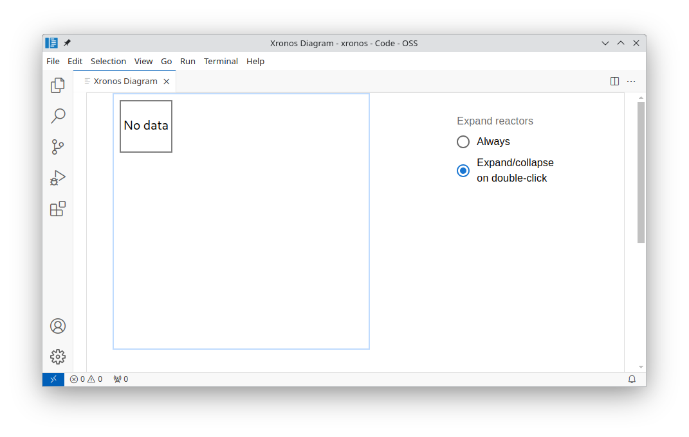

Diagram View
The topology of a xronos program can be visualized in an interactive diagram using our VS Code extension.
System Requirements
A Linux-based operating system. We recommend Ubuntu 22.04 or newer.
node.jsneeds to be installed. We recommend version23.1.0, and versions older than16.0.0will not work. We recommend usingnvmto manage yournodeversion, as described here.VS Code needs to be installed. On Ubuntu, download the package matching your architecture (x86_64, aarch64) and install the downloaded file using
dpkg -i <downloaded_file>.
Installation
Start VS Code and open the market place using . Type “Xronos” into the search field and then click the Install button next to the Xronos extension.
Rendering Diagrams
Open VS Code and bring up the Command Palette using
Ctrl+Shift+P. Type Xronos: Diagram and select the
corresponding entry using ⏎. This will open the Xronos Diagram view as
shown below.

Initially, no diagram is shown. The diagram view automatically renders the program that was last executed. Try running the Hello World example. If you like, you can use the builtin terminal of VS Code.
$ source .venv/bin/activate
$ python hello.py
Now the diagram view updates and shows the hello reactor that we just executed.
You may run arbitrary xronos programs and observe their topology in the diagram
view. For instance, the YOLO example is rendered as shown below.

Viewing Diagram Server Logs
To view the diagram server logs, open the VS Code integrated terminal using
Ctrl+` and navigate to the terminal titled Xronos Diagram Server.
Interoperability with WSL or Visual Studio Code Remote - SSH
We recommend Microsoft’s WSL or Visual Studio Code Remote - SSH extensions
for users who prefer to use an unsupported operating system or who are doing
on-target development on a headless machine.
The diagram viewer requires port forwarding in order to work with the Visual Studio Code Remote - SSH extension. WSL does not require port forwarding.
The first time you start a new VS Code session using the Visual Studio Code Remote - SSH extension and open the diagram viewer, you
may receive a notification like the following:
If you do not receive this notification, it could be because automatic port
forwarding is not enabled in your VS Code settings. Therefore, you will need to
forward a port manually by following the directions in VS Code’s official
documentation or by
executing the command VS Code: Forward a Port in the VS Code command palette.
The port you will need to forward will be specified in the
logs as some port number between 3001 and 3020.